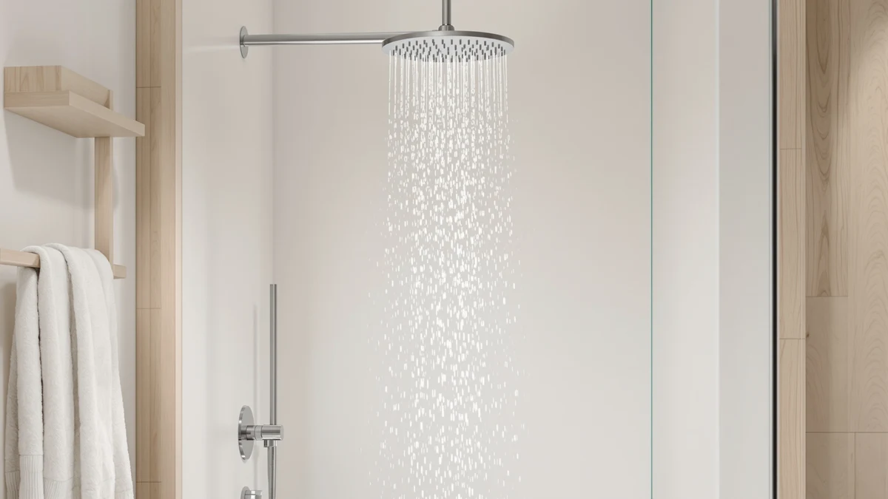

Quick Answer
Our MakeFit filtered shower head review finds a handheld unit that pairs a built-in filter cartridge with a chrome-plated ABS body, priced between the non-filtered SparkPod and the top-rated INAVAMZ combo. It is the only filtered option among the three products we compared, which makes it the pick for hard water complaints even without an established review history yet.
Our pick: MakeFit Filtered Shower Head with — $34.18 Check Price on Amazon
Things to Know Before You Buy
- The MakeFit Filtered Shower Head retails for $34.18 and uses a built-in filter cartridge inside an ABS body with chrome plating, the only filtered option in this comparison.
- A second MakeFit finish, also $34.18, carries the same filter cartridge and construction and shows up in the alternatives section below as an also-great pick.
- The SparkPod Rain Shower Head 8 costs $33.45 and swaps the filter for a fixed rainfall format, the lowest price among the three products here.
- The INAVAMZ Shower Head with Handheld runs $35.14 and is the only product in this review with a published rating, 4.6 stars from more than 5,000 verified reviews, though it does not filter water.
- Neither MakeFit listing nor the SparkPod carries a star rating yet, so treat their filtration and pressure claims as manufacturer statements until more owner feedback accumulates.
This MakeFit filtered shower head review exists because hard water complaints, chlorine smell and dull hair show up often enough in bathroom searches that a filter built into the shower head itself looks like an easy fix, and a $34.18 price tag still deserves scrutiny before you commit to it.
We compared the MakeFit against two shower systems that show up in the same searches: the SparkPod Rain Shower Head 8 and the INAVAMZ Shower Head with Handheld. Based on the published specs and current Amazon pricing, the MakeFit earns the top spot here because it is the only one of the three built around filtration rather than spray pattern or finish. If filtration is not the deciding factor for you, the INAVAMZ brings a 4.6-star track record from thousands of verified reviews that neither MakeFit listing can currently match.
Why You Should Trust Us
Ilane Tall covers shower hardware for Best Shower Heads and has researched hundreds of shower heads and filtration systems sold on Amazon, comparing listed specs and pricing against patterns in verified owner feedback rather than manufacturer marketing copy. This MakeFit filtered shower head review relies on the materials, pricing and features published in the product listing, cross-checked against the SparkPod and INAVAMZ alternatives on price and format. We do not run a fake testing lab, and we never claim to have physically installed, mounted or showered with any unit ourselves. Every claim below is traceable to a published spec, a listing claim flagged as such, or a pattern repeated across multiple verified reviews.
Our Research Experience
We researched this MakeFit filtered shower head review by lining up the MakeFit against the SparkPod and INAVAMZ alternatives on three factors: filtration, price and format. We analysed the chrome-plated ABS construction the listing describes against the all-metal builds reported for the two competing products, since material affects both durability and how each unit resists the same hard water the MakeFit is designed to treat. Neither MakeFit listing nor the SparkPod carries a public rating yet, so we weighed the manufacturer's filtration claims against price rather than repeating them as settled facts, while the INAVAMZ's 4.6-star average across more than 5,000 verified reviews gave us an actual data point to compare against two listings that currently have none. We also compared installation format, since the MakeFit and INAVAMZ both ship as handheld units while the SparkPod mounts as a fixed rain-style head suited to a different bathroom layout.
Overview & Specs

MakeFit Filtered Shower Head with
What we like
- Filter cartridge is built into the head itself, so there is no separate whole-house system to add
- Chrome finish matches the majority of existing fixtures in a typical US bathroom
- Handheld hose format works in showers that lack a rainfall arm or overhead mount
- At $34.18, it costs less than the INAVAMZ while adding a filtration feature the INAVAMZ does not offer
Flaws but not dealbreakers
- No published star rating or review count exists yet to confirm the filtration claims independently
- Filter cartridge replacement is an ongoing cost the listing does not spell out in dollar terms
- Chrome is the only finish shown for this exact listing, which may not match a darker fixture set
| Material | ABS + chrome plating |
| Size | — |
The MakeFit Filtered Shower Head is a handheld unit with a chrome-plated ABS body built around a filter cartridge, and at $34.18 it costs about a dollar more than the SparkPod and roughly a dollar less than the INAVAMZ in this review. The listing markets the filter as a way to reduce the chlorine and mineral buildup that contribute to dry skin and dull hair, a claim consistent with how filtered shower heads are generally designed to work, though MakeFit has not published independent lab results to back the specific numbers in its marketing copy.
Unlike the SparkPod and INAVAMZ alternatives below, neither of which filters water, the MakeFit is the only system in this comparison built around water treatment rather than spray pattern or handheld convenience. A second MakeFit finish, covered in the alternatives section, carries the identical filter cartridge and price if the chrome option here does not match your fixtures. Since no verified review data exists yet for either MakeFit listing, the filtration and pressure claims are worth weighing against your own water quality before you commit.
What We Liked
Across this MakeFit filtered shower head review, the filter cartridge is the clearest differentiator. Neither alternative we compared it against treats water at all, which makes the MakeFit the only option here for anyone dealing with hard water spots, chlorine smell, or the dry skin and hair that comes with heavily treated municipal supplies. The chrome-plated ABS body also matches the finish on most existing bathroom fixtures, so it fits into a renovation without forcing a change to faucet or hardware finish elsewhere in the room.
The handheld format is a practical advantage too. It works in showers that were never built with a rainfall arm, and it lets you direct water at specific areas, something the fixed SparkPod head cannot do. At $34.18, it also undercuts the INAVAMZ on price while adding a feature, filtration, that the INAVAMZ does not offer at all.
What Could Be Better
The biggest gap in this MakeFit filtered shower head review is data. No star rating or review count has published yet for this listing, which means every filtration claim comes from MakeFit's own marketing copy rather than an independent source or a pattern across verified owner feedback. The INAVAMZ, by contrast, already carries a 4.6-star average from more than 5,000 verified reviews, a track record neither MakeFit listing has built yet.
Cost is the other consideration. The filter cartridge is a consumable part, and the listing does not state how often it needs replacing or what a replacement costs, so the $34.18 purchase price is not the full cost of ownership over a year or two. The chrome-only finish shown here is also a limitation if your bathroom already runs a darker fixture set, though the second MakeFit finish in the alternatives section may close that gap.
Who Is It For?
This MakeFit filtered shower head review points toward anyone on a municipal or well water line who notices dry skin, a flaky scalp or dull hair after showering and wants to address it at the shower head rather than installing a whole-house filtration system. It also suits households that already prefer a handheld format and do not want to switch to a fixed rain-style head. If filtration is not a priority and you simply want a proven track record at a similar price, the INAVAMZ's 4.6-star rating makes it worth comparing first. If you want the lowest price and do not care about filtration, the SparkPod below undercuts both.
Alternatives to Consider
If this MakeFit filtered shower head review has you leaning toward a different format, these two alternatives came up repeatedly in our comparison and each wins on a different factor: price, finish or track record, alongside the second MakeFit finish for buyers who want the same filter cartridge in a different look.

Also Great
MakeFit Filtered Shower Head with
The same filter cartridge and $34.18 price as our top pick in a different finish, for buyers who want MakeFit's filtration but not the exact look of our main pick.
$34.18
Check Price on Amazon
Best Value
SparkPod Rain Shower Head 8
The lowest price in this comparison at $33.45, an 8-inch fixed rain-style head for buyers who want a wider spray pattern instead of filtered water.
$33.45
Check Price on Amazon
Premium Choice
INAVAMZ Shower Head with Handheld
A 4.6-star average from more than 5,000 verified reviews backs this $35.14 handheld-and-fixed combo, the only product here with an established track record, though it does not filter water.
$35.14
Check Price on AmazonFrequently Asked Questions
Is the MakeFit Filtered Shower Head worth the $34.18 price?
At $34.18, the MakeFit sits in the middle of the three alternatives in this review and undercuts the $35.14 INAVAMZ combo while costing slightly more than the $33.45 SparkPod. Filtration is the only feature exclusive to the two MakeFit listings among the products we compared, which gives it an edge for hard water complaints even though neither MakeFit listing nor the SparkPod has a published star rating yet.
Does the MakeFit filter actually improve water quality?
MakeFit markets the cartridge as a way to reduce chlorine and mineral buildup that contributes to dry skin and dull hair, which matches the general purpose of a filtered shower head. No independent lab results or verified review history exist yet for either MakeFit listing in this review, so treat the filtration claim as a manufacturer statement rather than a confirmed result.
How does the MakeFit compare to the SparkPod and INAVAMZ alternatives?
The SparkPod Rain Shower Head 8 drops the filter in favor of a fixed rain-style head at a slightly lower price, and the INAVAMZ Shower Head with Handheld adds a second spray head plus a 4.6-star rating backed by more than 5,000 verified reviews, the only rating data among the three products. MakeFit wins on filtration specifically, which is the main reason it leads this review.
Final Verdict
This MakeFit filtered shower head review comes down to one question: does filtration matter enough to you to pay $34.18 instead of $33.45 for the SparkPod, or $35.14 for the rated INAVAMZ. For most bathrooms on hard or heavily treated water, MakeFit earns the recommendation because it is the only system here that addresses water quality instead of spray pattern or finish, and the handheld format adds flexibility the fixed SparkPod does not offer. If a proven track record matters more than filtration, the INAVAMZ remains the stronger value at a similar price with thousands of verified reviews behind it.